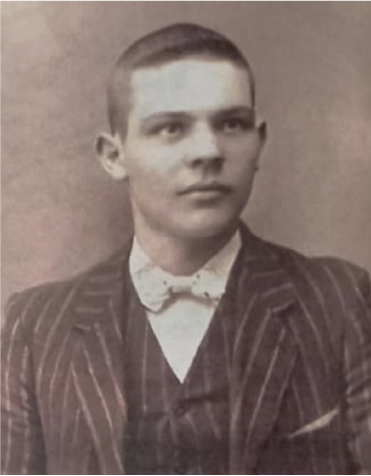
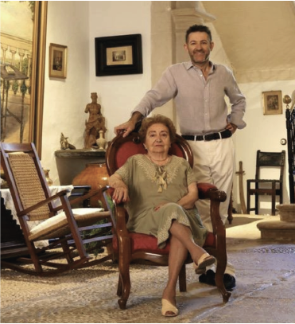
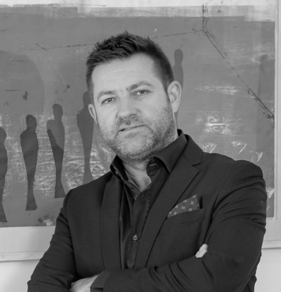
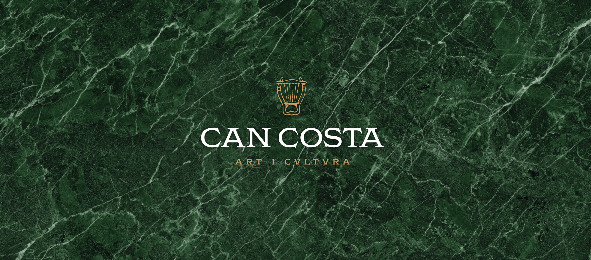

Benvinguts a un lloc on la música clàssica, la cultura i la història convergeixen en un ambient d’elegància i exclusivitat. El lloc de naixement de Miquel Costa i Llobera, un dels poetes més emblemàtics de Mallorca, ha estat restaurat i transformat en un centre cultural privat, pensat per a aquells que aprecien l’excel·lència artística i la preservació del patrimoni.


Joan Bou Sunyerva néixer a Felanitx el 1895 i va ser un destacat empresari que va superar les dificultats del seu temps. Mentre els seus sis germans emigraven a Xile per necessitat, ell va treballar al Marroc abans d'establir-se a Pollença, on va tenir una carrera exitosa. El 1931 va comprar la casa de Costa als nebots del poeta per80.000 pessetes, una inversió significativa en aquell moment. També va adquirir altres propietats importants com Son Brull i Alcanada.Va dedicar temps i recursos a conservar la casa i el llegat de Costa i Llobera, encarregant un retrat del poeta a Dionís Bennassar i un bust que avui es pot veure al jardí.
Els seus hereus, Maria Bou Villalonga i Joan Mateu Bou, han continuat preservant la casa i promovent el llegat cultural. Gràcies al seu compromís, la propietat s’ha convertit en un espai de trobada per a activitats culturals, mantenint viva la memòria de Costa i Llobera.







Conjugar temps passats amb els contemporanis, preservant
lacultura, el patrimoni i el llegat del poeta i la cultura clàssica
en contraposició amb la cultura contemporània dels
nostres dies.
Un refugi privat a Mallorca, accessible solo per a uns pocs, on l'elegància i la discreció creen una experiència exclusiva en un entorn incomparable.
Ca Costa és un espai compromès amb la difusió de l'art i la cultura, acollint exposicions, trobades i projectes que promouen l'art i la cultura.
Ca Costa aposta per l'art, els productes locals i el talent mallorquí, reforçant el valor autoctono.
Can Costa impulsa la difusió de la figura del poeta a través de reedicions de les seves obres, documentals i activitats que posen en valor el seu llegat literari i cultural.
.jpg)

Impulsor d’una nova vida cultural per la casa i advocat de professió, és un apassionat de la literatura, la cultura i l'art. Especialista en dret immobiliari i urbanístic, combina la seva professió amb la seva passió desenvolupant i liderant el projecte.
.png)
Llicenciat en Belles Arts a Bilbao i especialista en comunicació i disseny, amb experiència a la xarxa de Museus de Mallorca. Gestiona les àrees de comunicació i direcció a Can Costa

Llicenciada en Periodisme, és fotògrafa i consultora de comunicació. Originària de Bèlgica, col·labora amb l’equip de Can Costa promocionant iniciatives artístiques i culturals.
.png)
Llicenciada en Belles Arts per la Universitat de Barcelona i responsable del taller de restauració del Bisbat de Mallorca. S'encarrega de conservar i restaurar el patrimoni de Can Costa.
.jpeg)
Professor de percussió al Conservatori de Palma i col·laborador de l'Orquestra Simfònica de les Illes Balears. És l'encarregat de la programació musical de Can Costa.
.png)
Llicenciada en Humanitats per la Universitat de Salamanca, s'encarrega de l'inventari del mobiliari, pintures i documents de la casa per a futures exposicions, i també dona suport en altres tasques.


.jpg)